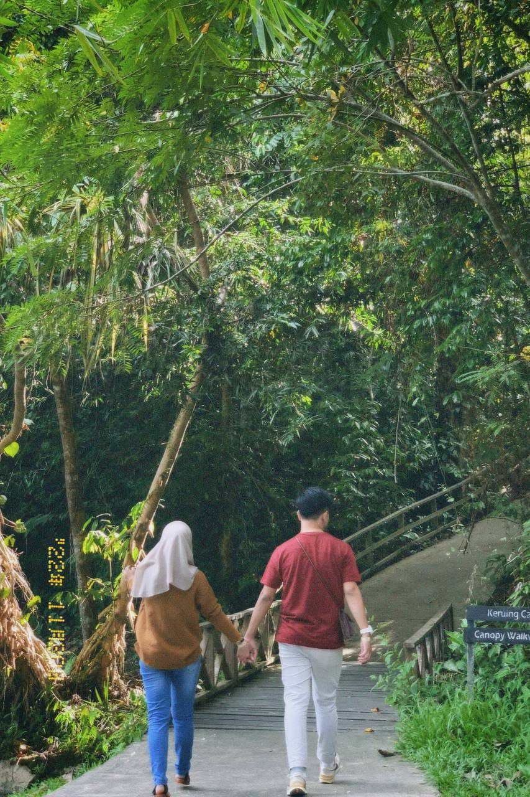
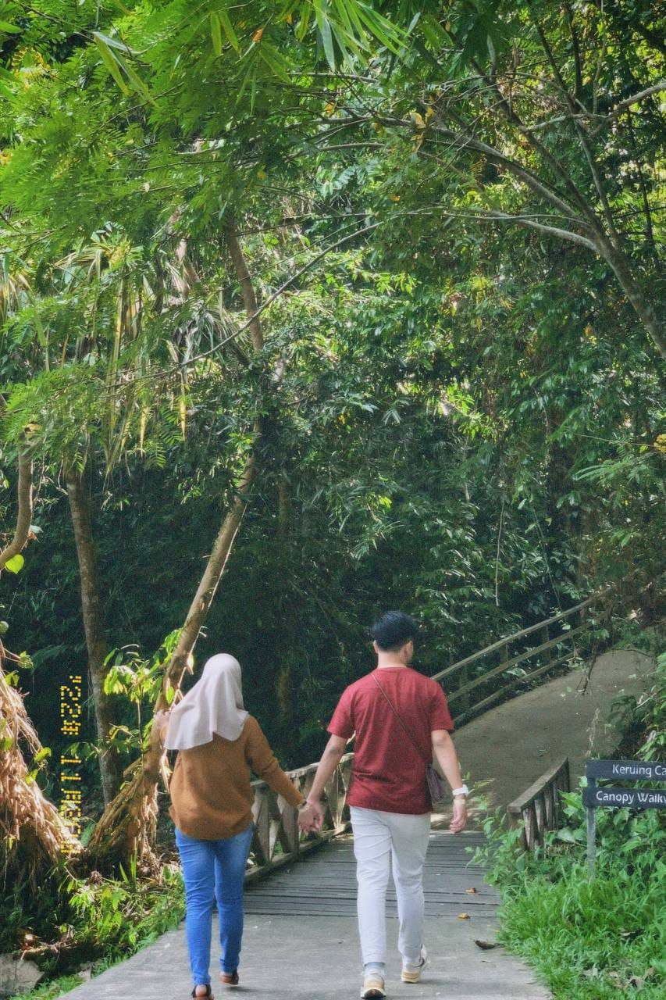

To My Sayang 🥰
Thank you for accepting me into your life, I could not thank you enough for doing so. I wanted to say that i love you so much for being my person, my bestfriend and most importantly for being my girlfriend. I can't thank you enough for that. I am not person who is good with words, but believe me I do love you sincerely and deeply. What I love the most about you is you being yourself, the vibe that you radiates around me when we are on a date, i swear to god it makes me the happiest man alive at the moment!! You know that your smile brings me happines? your eyes tells so much story, i can see it brimming with love when we met eye to eye. I glad that we met, meeting you was nothing short of a stories that are full of love, adventuresa and growth. We saw each other grow to the person we are right now. I still remember you being mad at me for pranking you about forgeting to bring our promise ring, we did so much that day, i put a ring on you, on that day onwards my end goal are to make you forever mine. We also did the trend you wanted, remember? the painting hahaha, it was so fun spending time with you, every ringgit that i spent cant be compared to the smile, the happiness that you bring into the relationship. Your presence is what makes me strong, you are my anchor, you pulled me out of my depression and i really appreciate that.
So on this day, i want to dedicate to you a bouquet flower, to be specific a carnation flower 💖
This flower symbolise the love and my admiration towards you. I hope you can accept the gift I prepared for you.
I know lately we havent been in good terms especialy this year, we been in a rough patch since, im sorry for what i've done sayang, i meant it, im learning from it, i want to change to be a better person for you, not others. I want to be the one who holds your hand till the end of my life, to lie beside you
Im really sorry for my action, what i did is wrong, i shouldn't done that, all you wanted was my attention and love...
Would you forgive me sayang? Can we start back together? can we work it out? I will treat you miles better this time. I won't repeat the same mistake again.
Though, if we couldn't i really love you till death do us part. I wish you the best of life, enjoy your time with your family, friends, and your partner. Meeting you is the best thing happened to my life, you are my favourite chapter, the one i always goes back to when im in my lowest. I appreciate you, realy...dearly dear sweetheart.
Forever.
Sincerely yours,
Fahmi Iqbal
 
